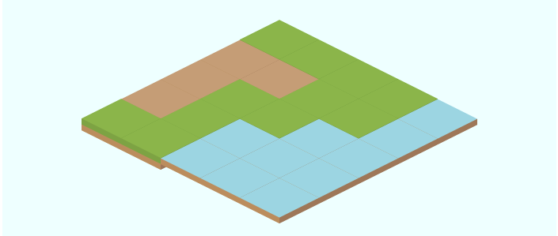

Pixi.js Isometric Map Part 2 - Tiles with Height
In this example a spritesheet is loaded (generated by Projmate) from the wonderful Isometric Road Tiles (nova) by Kenney.
Once loaded an isometric map is rendered using Frames from the loaded spritesheet.
var WIDTH = 700;
var HEIGHT = 300;
var stage = new PIXI.Stage(0xEEFFFF);
var renderer = PIXI.autoDetectRenderer(WIDTH, HEIGHT);
document.body.appendChild(renderer.view);
var loader = new PIXI.AssetLoader(['img/roadTiles.json']);
// map
var G = 0,
D = 1,
W = 2;
var terrain = [
[G, G, G, G, W],
[D, D, G, G, W],
[D, G, G, W, W],
[D, G, W, W, W],
[G, G, W, W, W],
];
// Tiles with height can exceed these dimensions.
var tileHeight = 50;
var tileWidth = 50;
// tiles
var grass = isoTile('grass.png');
var dirt = isoTile('dirt.png');
var water = isoTile('water.png');
var sand = isoTile('beach.png');
var tileMethods = [grass, dirt, water, sand];
function isoTile(filename) {
return function(x, y) {
var tile = PIXI.Sprite.fromFrame(filename);
tile.position.x = x;
tile.position.y = y;
// bottom-left
tile.anchor.x = 0;
tile.anchor.y = 1;
stage.addChild(tile);
}
}
function drawMap(terrain, xOffset, yOffset) {
var tileType, x, y, isoX, isoY, idx;
for (var i = 0, iL = terrain.length; i < iL; i++) {
for (var j = 0, jL = terrain[i].length; j < jL; j++) {
// cartesian 2D coordinate
x = j * tileWidth;
y = i * tileHeight;
// iso coordinate
isoX = x - y;
isoY = (x + y) / 2;
tileType = terrain[i][j];
drawTile = tileMethods[tileType];
drawTile(isoX + xOffset, isoY + yOffset);
}
}
}
loader.onComplete = start;
loader.load();
function start() {
drawMap(terrain, WIDTH / 2, tileHeight * 1.5);
function animate() {
requestAnimFrame(animate);
renderer.render(stage);
}
requestAnimFrame(animate);
}<!DOCTYPE html>
<html>
<head>
<link rel='stylesheet' type='text/css' href='../css/reset.css' />
<link rel='stylesheet' type='text/css' href='pixiisometric20-style.css' />
</head>
<body>
<!--
<script src="http://code.jquery.com/jquery-1.9.1.min.js"></script>
<script src="http://cdnjs.cloudflare.com/ajax/libs/underscore.js/1.4.4/underscore-min.js"></script>
<script src="http://cdnjs.cloudflare.com/ajax/libs/backbone.js/1.0.0/backbone-min.js"></script>
-->
<script src="js/vendor/pixi.dev.js" type="text/javascript"></script>
<script type='text/javascript' src='pixiisometric20-script.js'></script>
</body>
</html>
body {
margin: 0;
padding: 0;
}Setup Stage and Renderer
Setup the stage as usual.
var WIDTH = 700;
var HEIGHT = 300;
var stage = new PIXI.Stage(0xEEFFFF);
var renderer = PIXI.autoDetectRenderer(WIDTH, HEIGHT);
document.body.appendChild(renderer.view);Loading the Sprite Sheet
Loading the SpriteSheet is as simple as specifiying the URL to the JSON file
and assigning a handler to loader.onComplete. Pixi.js
treats a JSON file as Texture Packer metadata. With this metadata,
Pixi.js is able to load images from areas in the spritesheet and creates a Frame
for each.
Frame are used to construct Texture objects which in turn are used to create Sprite objects.
var loader = new PIXI.AssetLoader(['img/roadTiles.json']);Map and Tile Metadata
Here is the map we want to render on the stage.
// map
var G=0, D=1, W=2;
var terrain = [
[G, G, G, G, W],
[D, D, G, G, W],
[D, G, G, W, W],
[D, G, W, W, W],
[G, G, W, W, W],
];
// Tiles with height can exceed these dimensions.
var tileHeight = 50;
var tileWidth = 50;
// tiles
var grass = isoTile('grass.png');
var dirt = isoTile('dirt.png');
var water = isoTile('water.png');
var sand = isoTile('beach.png');
var tileMethods = [grass, dirt, water, sand];Drawing Tiles
In an earlier tutorial, flat isometric tiles were drawn from the north corner. We quickly see an error in that logic. Tiles with height (z-direction) seem to float as they are drawn from the top instead of the bottom. Ooops!
function isoTile(filename) {
return function(x, y) {
var tile = PIXI.Sprite.fromFrame(filename);
tile.position.x = x;
tile.position.y = y;
// middle-top
tile.anchor.x = 0.5;
tile.anchor.y = 0;
stage.addChild(tile);
}
}
The water and dirt appear to float at top of the grassline. The fix is to draw tiles from the bottom left. Fortunately, Pixi provides an anchor property. Too easy!
function isoTile(filename) {
return function(x, y) {
var tile = PIXI.Sprite.fromFrame(filename);
tile.position.x = x;
tile.position.y = y;
// bottom-left
tile.anchor.x = 0;
tile.anchor.y = 1;
stage.addChild(tile);
}
}Rendering the Isometric Map
The map is drawn as before with the x-axis increasing in southeast direction and the y-axis increasing in a southwest direction.
function drawMap(terrain, xOffset, yOffset) {
var tileType, x, y, isoX, isoY, idx;
for (var i = 0, iL = terrain.length; i < iL; i++) {
for (var j = 0, jL = terrain[i].length; j < jL; j++) {
// cartesian 2D coordinate
x = j * tileWidth;
y = i * tileHeight;
// iso coordinate
isoX = x - y;
isoY = (x + y) / 2;
tileType = terrain[i][j];
drawTile = tileMethods[tileType];
drawTile(isoX + xOffset, isoY + yOffset);
}
}
}Everything is ready. Tell the loader to load and when it finishes
start puts the example in motion.
loader.onComplete = start;
loader.load();
function start() {
drawMap(terrain, WIDTH / 2, tileHeight * 1.5);
function animate() {
requestAnimFrame(animate);
renderer.render(stage);
}
requestAnimFrame(animate);
}